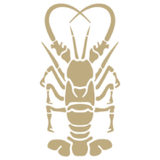
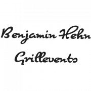
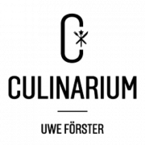
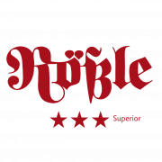

Available Wedding Dates – Secure Your Date for a Forest Wedding
Jetzt kontaktierenExperience the enchanting magic of nature when you choose to get married in the forest – with us, your dream wedding becomes an unforgettable celebration, accompanied by breathtaking scenery, the fresh breeze of nature, and the soothing sound of rustling trees.
Available Wedding Dates
Simply ask us directly for your preferred date – we will get back to you with the currently available dates. Send an inquiry
The Location
Getting Married in the Forest: A Place Full of Magic
Nestled in lush greenery, surrounded by majestic trees and soothing tranquility, our 2,000 m² grounds are the ideal venue if you dream of getting married in the forest. The expansive clearing forms the heart of our grounds and creates the perfect setting for your ceremony and the celebrations that follow.
Even at dinner, you stay close to nature: our roughly 100 m² marquee with transparent walls gives you a view of the greenery at all times – an experience that makes getting married in the forest truly special. For an extra highlight, our 7 mini golf holes offer you and your guests plenty of fun and unforgettable moments.
Explore Our Venue Virtually
Discover the clearing, marquee, and outdoor areas before your visit – room by room in our interactive 3D tour.
What Other Couples Say
Wunderschöne Location, tolle Atmosphäre und ein spitzen Team! Wir hätten keine bessere Location für unsere Hochzeit finden können. Danke für alles!!!♥️
Wir haben im Mai unsere Hochzeit im Waldgeflüster gefeiert. Es war ein traumhafter Tag und noch schöner, als wir es uns vorgestellt haben. Der Service und die Hilfsbereitschaft des Waldgeflüster Teams waren perfekt! Die Location ist unglaublich schön, sie ist weitläufig und sehr grün. Wir hatten echt Glück mit dem Wetter bei unserer freien Trauung, aber auch bei schlechtem Wetter gibt es eine Alternative von der Location. Danke für alles, Alicia und Denis
Absoluter Hammer. Wir würden 6 Sterne geben wenn es möglich wäre! Meine Frau und ich habe hier unsere Freie Trauung gehabt und anschließend unser Hochzeitsfest. Das Personal war immer freundlich und hilfsbereit vom Anfang (erste E-Mail) bis zum Ende (das Fest selbst). Alles wird gemacht, so dass der Tag besonders wird für das paar. Wir können uns gar nicht oft genug bedanken für das wunderschöne Erlebnis. Wir werden die Erinnerungen für immer beibehalten. Es war einfach perfekt. Nur zu empfehlen!
Wir haben im Mai unsere Hochzeit mit freier Trauung im Waldgeflüster gefeiert und es war einfach alles perfekt. Die Lokation selbst,das Team, die Deko, der Service alles war von vorne bis hinten super,jeder war bemüht, freundlich und mit dem Herzen dabei. Wir sind super glücklich, dass Waldgeflüster als Lokation gebucht zu haben und können es nur weiterempfehlen.
Wir haben Ende Juli unsere Hochzeit im wunderschönen Waldgeflüster gefeiert und waren rundum begeistert. Angefangen von den ersten Gesprächen bis hin zu einem perfekten Service mit super liebevollen und motivierten Mitarbeitern war diese Location perfekt. Felix und David haben mit so viel Liebe zum Detail einen perfekten Ort geschaffen für jeden, der gerne naturnah feiern möchte. Das ganze Team ist mit so viel Herz und Freude dabei und anders als bei vielen anderen Locations bucht man hier tatsächlich ein Gesamtpaket ohne versteckte Zusatzkosten und alle Wünsche und Absprachen wurden total unkompliziert umgesetzt. Diese Location lebt nicht nur von der tollen Anlage selbst, sondern definitiv auch von dem lieben Team! Vielen Dank für alles!!
Liebes Waldgeflüster-Team, vielen Dank, dass ihr an unserem besonderen Tag alles Erdenkliche möglich gemacht habt. Auch wenn das Wetter uns einen Strich durch die Rechnung gemacht hat, wart ihr so flexibel und hilfsbereit und standet uns mit Rat und Tat zur Seite. Die Location ist bei sonnigem sowie regnerischem Wetter sehr gut aufgestellt. Die freie Trauung hat aufgrund des Regens im Zelt stattgefunden. Es war eine sehr gemütliche und feierliche Stimmung. Mit ihrem besonderen Charme hat uns die Location verzaubert. Für alle Brautpaare, die nach einer Location suchen, können wir das Waldgeflüster nur empfehlen. 🙂
Die schönste Location in BaWü! Tolles Team, top Ambiente, nur zu empfehlen! Riesen Dankeschön, dass wir unseren besonderen Tag im Waldgeflüster feiern durften, besser konnte es nicht sein. 10/10💪🏽❤️
Einfach erst einmal DANKE. Wir haben unsere Hochzeit im Waldgeflüster gefeiert und waren sozusagen die Feuertaufe. Die Location ist wunderschön gestaltet – von der Sonnenterasse über das Festzelt, die Feuerstelle, Außenbar bis hin zum Bereich der freien Trauung. Die Inhaber haben mit uns alles besprochen, sind allen unseren Wünschen entgegen gekommen und haben extrem viel Engagement und Herzblut in die Location und auch unsere Feier gesteckt. Es waren super Servicekräfte da, es wurde sich um alles gekümmert und wir hatten einfach nur einen wahnsinnig tollen Tag mit euch. Wer eine Location sucht, die nicht nur ein Ort ist – sondern auch von den Leuten dort lebt, ein magisches Plätzchen für jeden Gast bietet und euren Tag besonders macht – das ist sie! Und da wir die Feuertaufe waren: Es lief vielleicht nicht alles aalglatt – aber perfekt für uns. D A N K E
Eine wundervolle Location zum Heiraten! Wir haben hier unsere Hochzeit im Juni gefeiert. Ich dachte bei schlechtem Wetter könnte es schwierig werden, aber ganz im Gegenteil! Wir hatten strömenden Regen und es war so wundervoll, die Trauung im Zelt zu haben. Auch den Kindern war dank Minigolf, Wiese und Wald genug geboten. Die Bewirtung war einfach klasse, das Personal unfassbar aufmerksam, die Getränke hervorragend, die Organisation im Voraus und im Nachhinein super unkompliziert, professionell und überaus freundlich. Die gesamte Location ist wunderschön gestaltet mit viel Liebe zum Detail. Im Verhältnis zu vielen anderen Locations stimmt hier auch das Preis-/Leistungsverhältnis noch! Wir würden hier jederzeit wieder feiern und ich kann jedem nur empfehlen hier zu buchen 🙂 Ein herzliches Danke an Felix, David, Sümi und das ganze Team! Wir haben den Tag bei euch sehr genossen!!
Absolut umwerfend, wir sind überglücklich! Wir haben unsere Hochzeit mit 90 Gästen hier gefeiert und waren von Anfang bis Ende mit allen mehr als zufrieden! Der Kontakt war immer super nett und mit sehr schnellen Rückmeldungen, die Beratung von Anfang an professionell und wir haben uns bestens aufgehoben gefühlt. Der Tag selbst war absolut umwerfend, was alle Gäste mehrfach bestätigt haben. Es ist so wunderschön grün und romantisch und die Aufteilung auf outdoor / Pavillon / Party-Area war absolut perfekt. Das Personal war total freundlich und aufmerksam und wir mussten uns um wirklich garnichts kümmern oder sorgen. Absoluter Herzensort, nur zu empfehlen! Vielen Dank für diesen mega Tag!
Als wir Waldgeflüster entdeckt haben, war die Location noch eine Baustelle. Felix und David konnten aber so bildhaft von ihren Plänen erzählen, dass sie uns direkt überzeugt haben. Und man muss sagen: sie haben sich selbst übertroffen. Die Location ist wunderschön und ist eine perfekte Kulisse für eine freie Trauung. Sie ist zwar ziemlich auf gutes Wetter angewiesen, allerdings hat das Team um Felix, David und Sümi auch immer einen Plan B für schlechtes Wetter parat. Das Zelt, die Minigolfbahnen und die Schwedenhütte sind auf jeden Fall Highlights bei einer Hochzeit der anderen Art. Auch in der Kommunikation lief alles professionell ab und bei der Feier selbst hatten wir immer einen Ansprechpartner, das war uns wichtig. Vielen Dank nochmal für die schöne Feier, die wir bei euch hatten 🙂
Charming Details for Your Forest Wedding
Our site map gives you a comprehensive overview of the venue and shows you every detail – including the most beautiful photo spots to perfectly capture your special day.


Open-Air Ceremony in the Forest
Picture yourselves saying “I do” beneath a lovingly decorated wedding arch, surrounded by gentle birdsong and the rustic beauty of nature. Our boho-style open-air wedding ceremony combines relaxed elegance with natural elements that blend perfectly into the surroundings. With wildflower arrangements and soft color tones, your ceremony becomes an unforgettable moment. Our team makes sure every detail – from the seating plan to the decor – matches your wishes, so your love is celebrated in a magical ambiance.

Piaggio Ape
A highlight right in front of the open-air ceremony area is our stylish green Piaggio Ape. This charming little vehicle brings not only a touch of vintage flair but also refreshment to your big day. Chilled drinks await on the Ape’s flatbed, welcoming your guests and creating a relaxed atmosphere. Perfectly staged and lovingly decorated, the Piaggio Ape blends seamlessly into the natural surroundings and makes for a special eye-catcher during your celebration.

Outdoor Bar
Our charming outdoor bar, right next to the cozy lounge, is the perfect spot for the champagne reception and the first toast to your happiness. This is where congratulations are shared, stories are swapped, and relaxed beats officially ring in the celebration. Meanwhile, the surrounding mini golf course offers entertainment and fun for young and old – a highlight that guarantees plenty of laughter and unforgettable moments.

Lounge & Fire Pit
At the heart of our grounds, surrounded by lush greenery, our cozy lounge invites you to linger. Centrally located and right next to the outdoor bar, it is the ideal spot for relaxed breathers, deep conversations, or convivial get-togethers. Especially in the evening, the built-in fire pit creates a warm, inviting atmosphere – perfect for letting the day wind down in peace.

Getting-Ready Cabin
Start your special day relaxed and in private in our lovingly furnished getting-ready cabin. Here you can prepare for the big moment with your loved ones – whether it’s hair and makeup, a glass of champagne, or simply a quiet moment. The cabin offers you the perfect retreat to start the day full of anticipation.

Marquee
Our spacious marquee holds up to 110 guests and is the perfect place to dine, drink, and enjoy the day to the fullest together. Its open design and the option to decorate the marquee to your liking create an inviting, festive atmosphere. Whether an elegant dinner or an exuberant party – here you can share unforgettable moments with your loved ones, with nature all around you.

Bar & Dance Floor
Our main house has room for a photo booth & more. We are especially proud of our dance floor, where a large panorama window always keeps the guests in the marquee in view. Dance floor and dinner area: separate yet together – club vibes at your wedding!

Sun Terrace & Buffet
The generous sun terrace is the ideal spot for culinary delights. This is where your caterer’s tents are set up, so your guests can enjoy the delicacies in a relaxed atmosphere. With an open view of the greenery and surrounded by the unique forest backdrop, the terrace becomes the perfect place for a summer buffet or a stylish dinner under the open sky. Our terrace combines closeness to nature with elegance, creating an inviting setting that enriches your celebration.
Deep in the forest, where the trees whisper and nature tells its stories, your love takes center stage – a place as magical as the way your hearts beat for each other.
Impressions: Photos & Memories
Pictures say more than a thousand words – especially when they are taken against such a natural backdrop. In our gallery you will find impressions of past weddings to inspire you. That way, you get a feel in advance for the many possibilities Waldgeflüster has to offer.
{kind=link}
{kind=link}
{kind=link}
{kind=link}
Our Caterers
When love is in the air, there should be love on the plates, too. That is why we work with outstanding catering partners.
In selecting them, we made a point of covering a wide range of cooking styles and price categories. All caterers know the specific conditions on site and have already gained experience with us over the past years. This ensures everything runs smoothly before and during your event.
Here our caterers briefly introduce themselves:


WENGERT CATERING
Our team stands for more than 25 years of experience in full-service catering. We love the challenges and variety that every event brings. For us, one thing matters above all: making people happy.
We don’t just cook for you – we also take care of the atmosphere and your guests’ well-being. Cooking, presenting food tastefully, and warm-hearted service are not just work for us, but a passion.
To support you as best we can in organizing your wedding, you will have the same contact person from start to finish. This is how we guarantee a smooth & uncomplicated process. From the first email and an initial rough quote to a personal conversation, we are at your side at all times and happy to advise you.
P.S.: We have been a partner of Waldgeflüster from the very beginning and have created a brochure especially for this venue with suitable buffets, including a setup plan.

ZUM MICHEL CATERING
Celebrate in style and let us take care of your catering! Our professional team is ready to turn your event (family celebration, birthday, wedding, or corporate event) into an unforgettable experience.
We offer a wide range of delicious dishes and refreshing drinks, individually tailored to your needs and preferences. From exquisite appetizers and hearty main courses to tempting desserts – there is something for every taste.
Our service goes beyond mere delivery. We are also happy to take care of serving and decorating the event spaces.
We understand that every occasion is unique. That is why we are flexible and ready to accommodate your special requests – our greatest ambition is to see you and your guests beaming.
Trust in our many years of experience and our commitment to quality, and contact us today to discuss your customized catering package.
Let’s make your event a culinary highlight together!”


GRILL.BAR BY BENJAMIN HEHN
You want to host your birthday, your wedding, or another event and don’t want to worry about a thing? We take care of it!
You are special, so your event will be, too. At Benjamin Hehn grill events you get everything except “ordinary”. If you are looking for more than just a caterer who puts food on the table, you have come to the right place.
We grill everything live on site, right in front of your guests. Feel free to look over our shoulders and be amazed. With us, all the senses are pampered.
Simply get in touch and plan your personal BBQ event with the two-time German grilling champion.
Your guests will thank you.

ACHTENDER CATERING
Let’s be honest… Good catering is a matter of taste. Sometimes it should be a rustic evening, sometimes an ambitious gala dinner. Share your wishes with us and we will turn your celebration into an unforgettable story, whether for two connoisseurs or 500 party guests.
With plenty of heart, charm, and enthusiasm, we skillfully bring your dreams and visions to life, so you can relax and enjoy your occasion yourself.
We want to accompany you in organizing your event and give it a personal touch. That is why every planning process starts with a conversation, so that together we can create a unique and individual experience. This way, you and your guests can enjoy the wonderful atmosphere, with attentive service, in an evocative setting.
Your Achtender Catering team


UWE FÖRSTER
Take…
only ever the finest ingredients for an experience of a special kind. Because an experience is like a first-class menu or buffet. And that is exactly what we prepare for you.The most important ingredient: a master chef with decades of experience in fine dining. Add an almost unlimited amount of culinary creativity. Fold in a pinch each of Asian, French, Spanish, and Italian cuisine. And season it all with the finest table culture and first-class cultural enjoyment in the form of a constantly changing event program.
Finely rounded off with catering that leaves none of your wishes unfulfilled. Our culinary creations refine your celebration.A happy bride, an excited groom, lots of joyful guests – and everyone wants a perfect day. We are happy to prepare it for you. With great attention to detail, even more experience, and creative cuisine at its finest.
MAKE YOUR WEDDING A CULINARY DREAM!

HOTEL & RESTAURANT SCHWANEN
Let’s be honest: cooking a meal that tastes good is something pretty much every caterer can do – us included! But cooking a meal that is also made with genuinely high-quality ingredients and real culinary craft, that is finally TRULY DIFFERENT and cooked by professional, genuinely good chefs, that is beautifully plated and presented and brought to the table by genuinely lovely service staff – that is probably not so easy to find. With us, it simply is.
We are approachable, authentic, and human. Above all, we are also realistic, honest, and humorous, and we know what works and goes down well with your guests – and what doesn’t. The result? 100% happy Google reviews! At Waldgeflüster we have decided to offer only plated menus (dessert may of course be a buffet). This means we are completely independent of the weather, can respond much more precisely to special requests, are more affordable, and naturally bring a much more pleasant atmosphere to the culinary side of your wedding.
We look forward to your inquiry
Yours, Anja Wetzel and her spirited team

GUSINDE CATERING
We are a regional caterer from Reutlingen
We have been an owner-run business for more than 50 years
We cater around 500 events a year
We cook regional cuisine. What can you expect from us?
That we more than live up to the trust you place in us.I look forward to meeting you.
Wolfgang Gusinde
“The only constant is change. Everything around us is in a state of constant change, and that is a good thing. Still, the tried and tested has its rightful place, too. Our understanding of sustainability is shaped by the best possible interplay of these two factors: responsibility toward tradition as well as the future, preserving what has proven itself while staying open to the new.”


HOTEL RESTAURANT & METZGEREI RÖSSLE
Our passion: bringing your wedding dreams to life on the plate.
We specialize in making your wedding celebration an unforgettable experience. Benefit from our many years of catering experience; we would love to make your culinary dreams come true.
Our promise to you:
We believe the foundation of a successful wedding celebration begins with a wonderful menu. Our experienced kitchen team works with true craftsmanship, drawing on seasonal and regional produce to create an incomparable taste. We work closely with you to create a tailor-made meal that reflects your wishes and preferences. Whether you choose a traditional wedding buffet or a barbecue buffet – we turn your ideas into reality. Our dedicated team ensures not only culinary highlights but also a smooth flow and warm-hearted service, so you can relax and enjoy the day to the fullest.We look forward to your inquiry and would be delighted to be part of your special day. Stephan and Birgit Schlecht & team
The Waldgeflüster TeamPouring our hearts into your dream wedding
David and Felix share a common vision: to offer a wedding venue that stirs emotions and stays in your memory forever. With passion, experience, and love for detail, we accompany you in planning your big day. From the first idea to the perfect execution, we are at your side – with advice, hands-on support, and a whole lot of heart.
Would you like to get to know us even better? We look forward to telling you more about ourselves – feel free to stop by here!
Everything That Matters for Your WeddingAnswers to your questions
Dreaming of your wedding surrounded by greenery and want to know every detail? In our FAQ section you will find answers to the most common questions about our wedding venue, the schedule, the decor, and much more. Click through and plan your big day with us!

Your Next Step: Request Your Event
Ready for your dream wedding in the forest? Then send us a message and let us know what you have in mind. Together we will develop a concept that suits you 100% – whether an intimate circle or a big celebration, boho chic or elegant decor. We look forward to welcoming you to Waldgeflüster very soon!
Your next step
A few key details are all we need.
Tell us briefly what you are planning. We will get back to you personally and find out together what suits you best.
- By e-mail
- anfrage@waldgefluester-events.de
- Prefer to talk?
- +49 (0)173 614 98 96